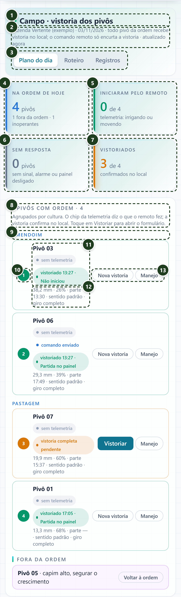
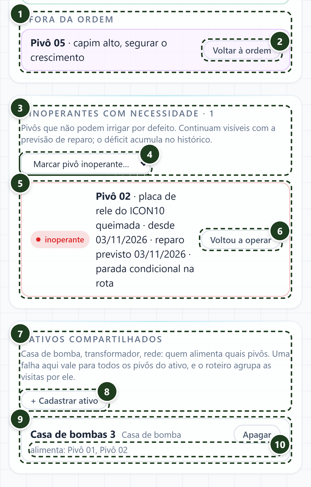
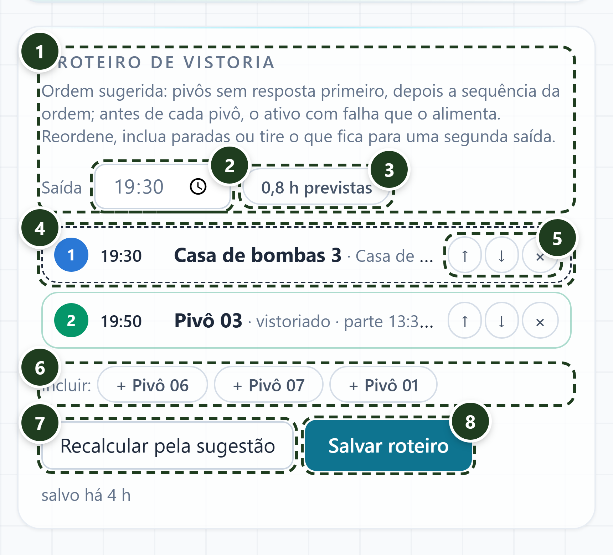
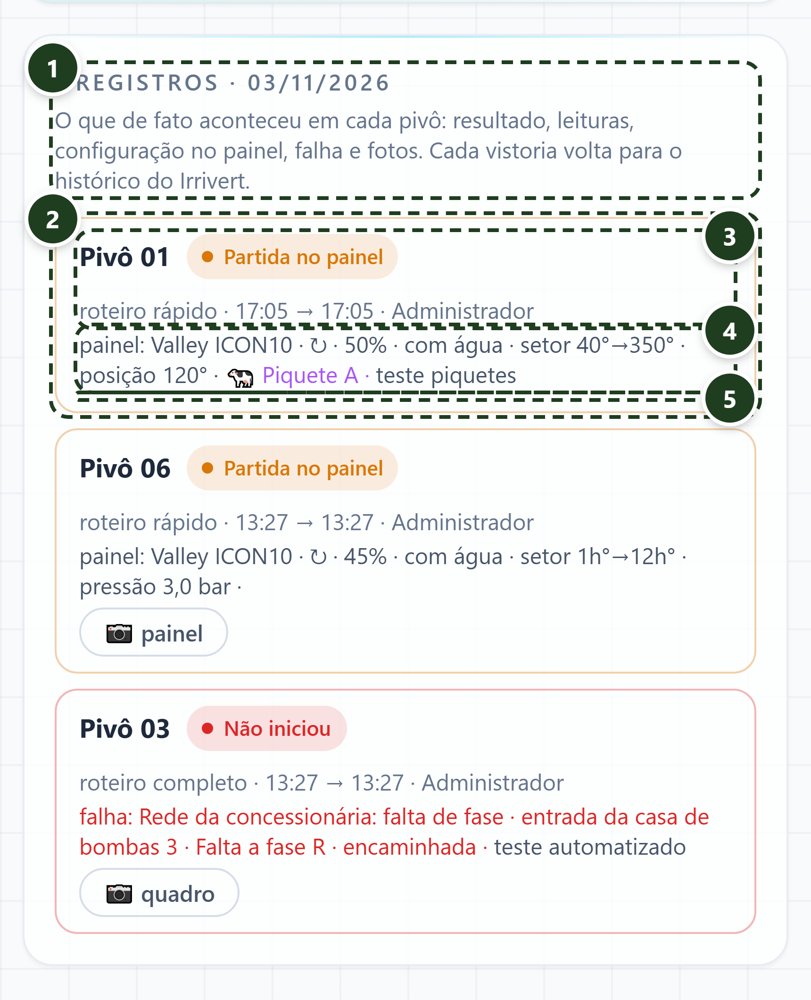

O ponto pulsa em verde quando o aparelho tem internet e fica cinza sem internet.
Fazenda, data do plano, a regra da fazenda e há quanto tempo o plano foi atualizado. O plano se renova sozinho a cada minuto. Aqui também aparecem os chips "Sem internet · salvando no aparelho", "N vistorias aguardando envio" e o botão "Enviar agora".
Plano do dia, Roteiro e Registros. Trocar de parte fecha qualquer formulário aberto.
Quantos pivôs têm ordem. Embaixo, quantos saíram por manejo e quantos estão inoperantes.
Pivôs cuja telemetria diz "irrigando" ou "movendo". Esses recebem roteiro rápido.
Sem sinal, em alarme ou painel desligado. Fica vermelho se houver algum. Esses exigem roteiro completo.
Quantos já têm vistoria do dia, contando as que ainda estão no aparelho. Fica verde quando todos foram vistoriados.
Cabeçalho do painel, com a contagem e a instrução de uso.
Os pivôs são agrupados pela cultura (Amendoim, Pastagem...).
Sequência da ordem de irrigação. A cor resume o estado: verde vistoriado ou iniciou pelo remoto; vermelho sem resposta ou falha em ativo; âmbar vistoria pendente.
O que a telemetria vê, "comando enviado", o estado da vistoria (vistoriado com hora e resultado, no aparelho, rápida ou completa pendente) e falhas abertas na casa de bomba ou rede que alimenta o pivô.
Lâmina, percentímetro, hora da partida, sentido de giro, ângulo de parada em hora do relógio, gado no piquete (roxo) e modelo do painel.
"Vistoriar" abre o formulário no topo; depois vira "Nova vistoria". "Manejo" (só gestor e admin) pede o motivo e tira o pivô da ordem.

Pivôs retirados por orientação de manejo, com o motivo registrado. O déficit fica como intencional.
O gestor devolve o pivô à ordem planejada.
Pivôs que não podem irrigar por defeito. Continuam visíveis para não sumirem do balanço.
Só gestor. Escolhe o pivô, informa o motivo e a data prevista de reparo.
Motivo, desde quando e reparo previsto. Quando o reparo é hoje, aparece "parada condicional na rota".
Encerra a situação de inoperante.
Casa de bomba, transformador, rede, usina, captação, reservatório e adutora. Uma falha aqui vale para todos os pivôs do ativo.
Só gestor. Tipo, nome e os pivôs que o ativo alimenta.
Nome, tipo e "Apagar". Com falha aberta o card fica vermelho, mostra a descrição, a previsão informada e o botão "Regularizou".
Lista dos pivôs ligados ao ativo. É o que define a propagação da falha e o agrupamento do roteiro.
Pivô, cultura, a ordem do dia (lâmina, percentímetro e hora) e o que a telemetria diz.
Rápido ou completo. O sistema sugere rápido quando a telemetria confirma que o pivô iniciou. "Cancelar" fecha sem salvar.
Só no completo. Define por qual passo da cadeia começar (comunicação, energia, água a montante, bomba e adutora, estrutura, painel).
Pneus, bicos, alinhamento e caminho livre. Miniatura do pivô com as fatias dos piquetes: toque na fatia ou no chip para marcar onde há animais (roxo). Posição atual em graus (0 a 360, já vem da telemetria). O arco azul é o setor livre calculado para contornar o gado.
Pressão no centro, tensão, fonte de energia e se o painel respondeu ao remoto.
Marque quando a equipe programou direto no painel. Abre modelo, sentido de giro, percentímetro, lâmina, com água ou a seco, e setor em graus. Vem preenchido com a ordem; com animais marcados, o setor e o sentido vêm do cálculo. Torna a foto do painel obrigatória.
Passo da cadeia, origem, qual ativo cadastrado (com aviso de quantos outros pivôs são afetados), onde, previsão informada e descrição. "Resolvido no local?" define o resultado: sim vira partida no painel; não vira "não iniciou" e abre a falha no ativo.
Em operação, partida no painel ou não iniciou.
Painel (obrigatória quando configurado no painel), última torre e, com falha, quadro ou medidor. São reduzidas no aparelho antes de salvar.
Fica desabilitado dizendo o que falta. Ao concluir, a vistoria é gravada no aparelho e enviada quando houver internet. Em operação ou partida no painel avança a ordem para "enviada".

Regra da sugestão: pivôs sem resposta primeiro, depois a sequência da ordem; antes de cada pivô, o ativo com falha que o alimenta.
Base para a hora prevista de chegada em cada parada.
Soma das paradas: 15 min no roteiro rápido, 45 no completo, 10 num ativo e 10 de deslocamento entre paradas.
Número, hora prevista de chegada, nome, tipo de roteiro e duração. Ativos têm borda tracejada. A cor segue o estado do pivô.
Subir, descer ou tirar da rota (fica para uma segunda saída).
Pivôs e ativos que ficaram de fora do roteiro.
Volta à ordem automática.
Guarda o roteiro do dia no servidor. Embaixo aparece há quanto tempo foi salvo.

Lista do dia, da vistoria mais recente para a mais antiga. As que ainda estão no aparelho vêm primeiro, com fundo âmbar.
Uma vistoria. A borda segue a cor do resultado: verde em operação, âmbar partida no painel, vermelho não iniciou.
Pivô, resultado, tipo de roteiro, início → fim e quem fez. Na fila aparece "aguardando envio" ou "recusada".
Configuração no painel (modelo, sentido, percentímetro, água, setor), pressão, falha (origem, local, descrição, resolvida ou encaminhada) e observação.
Abrem em tela cheia ao tocar. Uma vistoria recusada pelo servidor mostra o erro e o botão "Descartar".